Über mi
Mi Name isch Myriam Trösch, i bi 25gi u bi im Ämmitau ufgwachse u id Schuu gange. Nachder Schuu bini diräkt i Gymer uf Thun u aschliessend es Jahr ad PH Bärn. Nächhär hani im Sicherheitsdienst u im Chundedienst gschaffet u dert agfange mi nöi z orientiere. So bini schlussamänd ufd Mediamatik cho. Sit 2024 macheni d Lehr als Mediamatikerin EFZ u bi jetzt im letschte Lehrjahr. Mit mir chames guet lustig ha aber oh ärnsti Themä beredä. I bi e sehr zfridne Mönsch u lachä gärn u viu. I bi aber oh rächt toupatschig (Aso nüt vo Fettnäpfli, i hüpfe meh so vo Fritöse zu Fritöse)
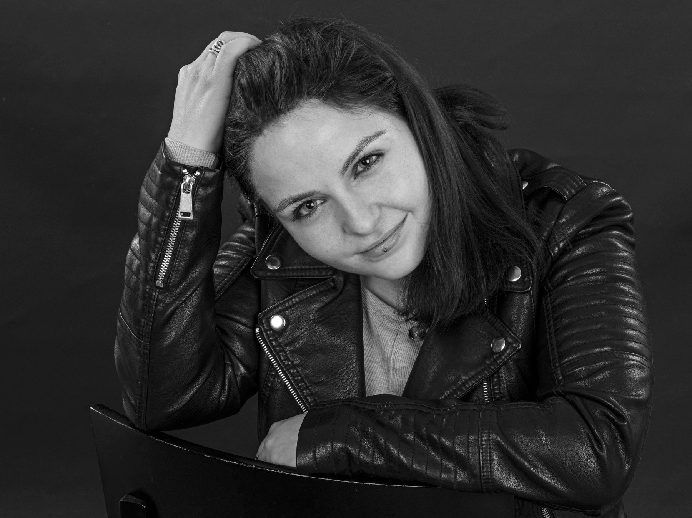
Mini Motivation
Werum zersch dä mega Umwäg? U wohäre söus jetz no gah?
Die zwöi Frage wärde mir immer wider gsteut. Über dä Umwäg chame sech strite, aber i muess eifach säge: I beröie ke Sekunde. Am Gymer u a der PH hani viu Erfahrige dörfe sammle u viu tolli Lüt kenneglehrt. U oh d Arbeit im Chundedienst het mir viu bracht, bsunders dassi glehrt ha wie z ächtä Läbä spiut usserhaub vom Gymer u vom Studium.
I ha lang nid gwüsst wasi gnau wot mache, vorallem Usbildigstechnisch. Aso hani fängs mau der Gymer gmacht, ha immer wider uf anderi glost, womer hei weue sege, wele Bruef für mi am bestä wär. Irgendeinisch hanimi de derzue entschlosse ine Loufbahnberatig zgah. I hami ner würk intensiv mit mir, mine Interesse, mine Sterchine u mine Wünsch usenandgsetzt u nach langem überlege hanimi fürd Mediamatik entschide. Hüt weissi, dass das genau z Richtige isch gsy. Ider Mediamatik chani mini Interesse ir Informatik u mini Kreativität ideal verbinde. Am meischte packt mi ds Webdesign, ds hani ir Bruefsschuu glernt u när oh privat dörfe nütze. U Je öfter dassis gmacht ha, desto meh Fröid hani oh dranne becho. Nach der Lehr möchti genau us däm Grund im Berich Webdesign schaffe. U wiu mer glych irgendwie no öpis fäut, möchti bruefsbegleitend d HF Applikationsentwicklig ahänkä.
Mini Hobbys
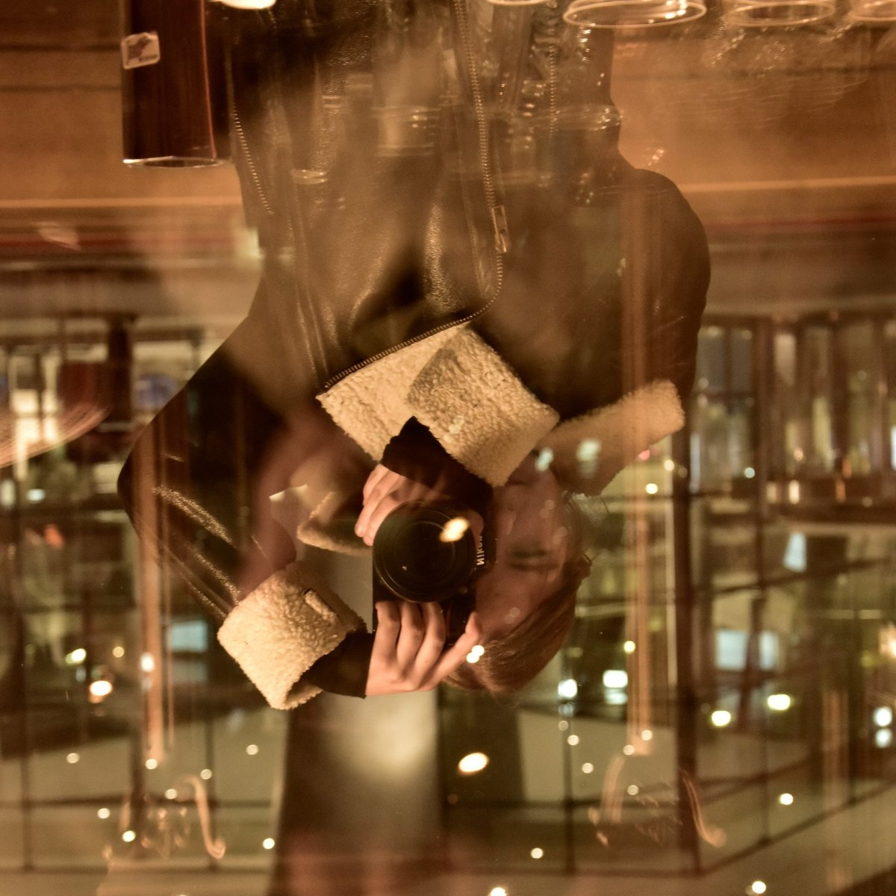
FotografiereMönschä, Tier u fasch aues müglächä
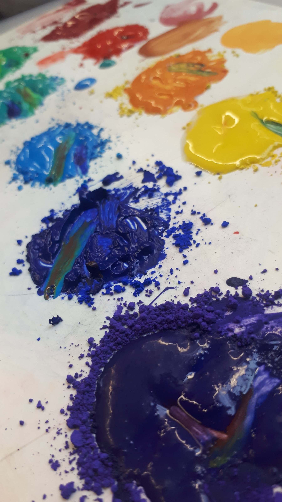
Zeichne u MaleMit Pinsu u Bleistift aber oh ufem Laptop
WinterLäsä, Game u Seriä luege
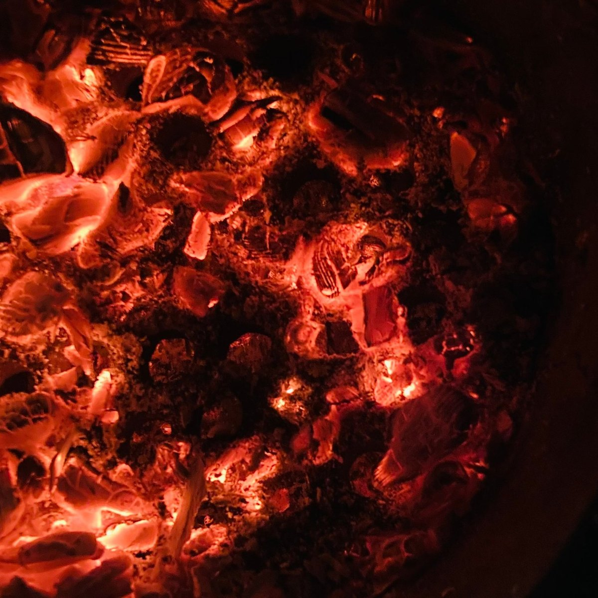
SummerMit Fründe brätlä u ah Konzert u Festivals gah
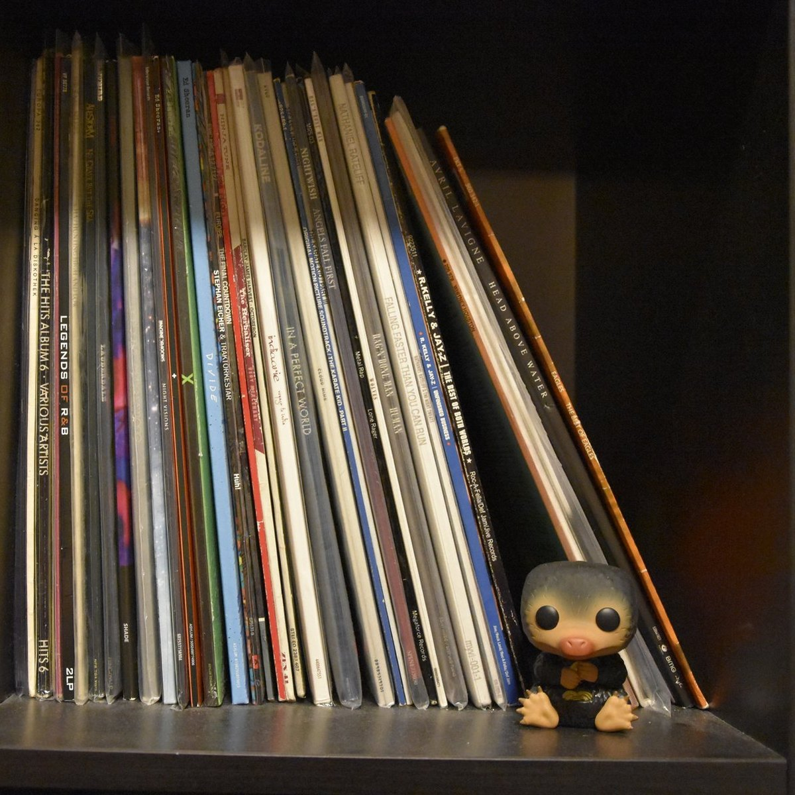
MusigPlatte lose u Singe
Wasi gärn ha
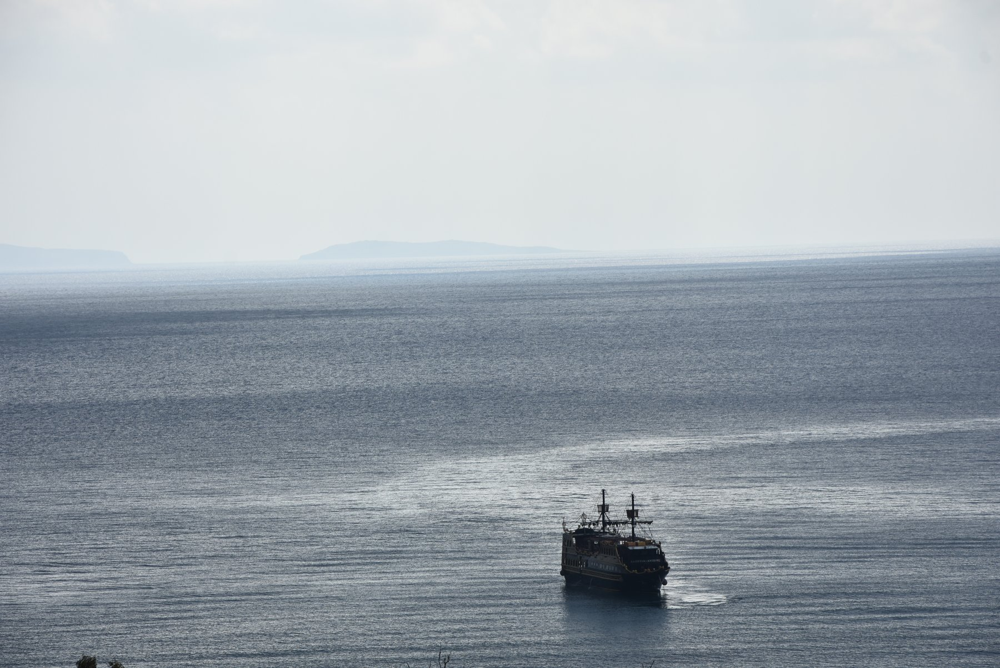
Reise u nöi Sprache u Kulture kennälerä
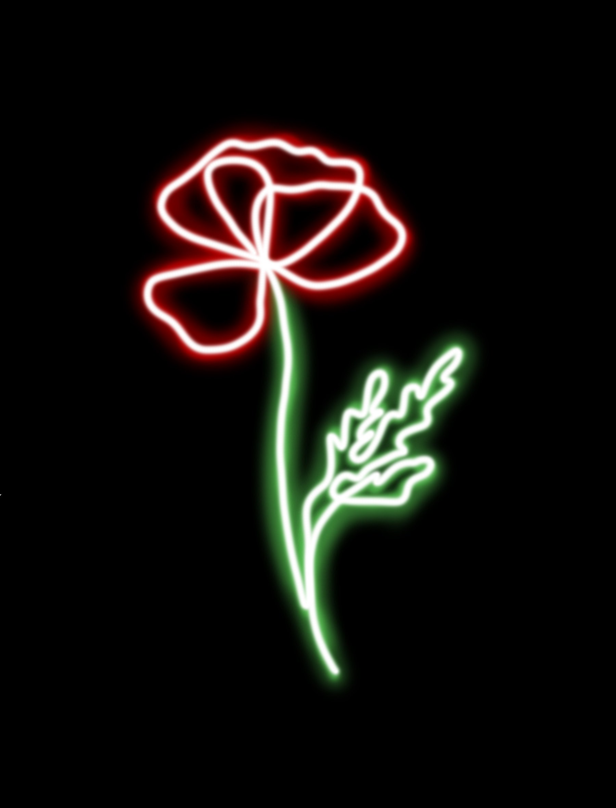
Mohnblueme
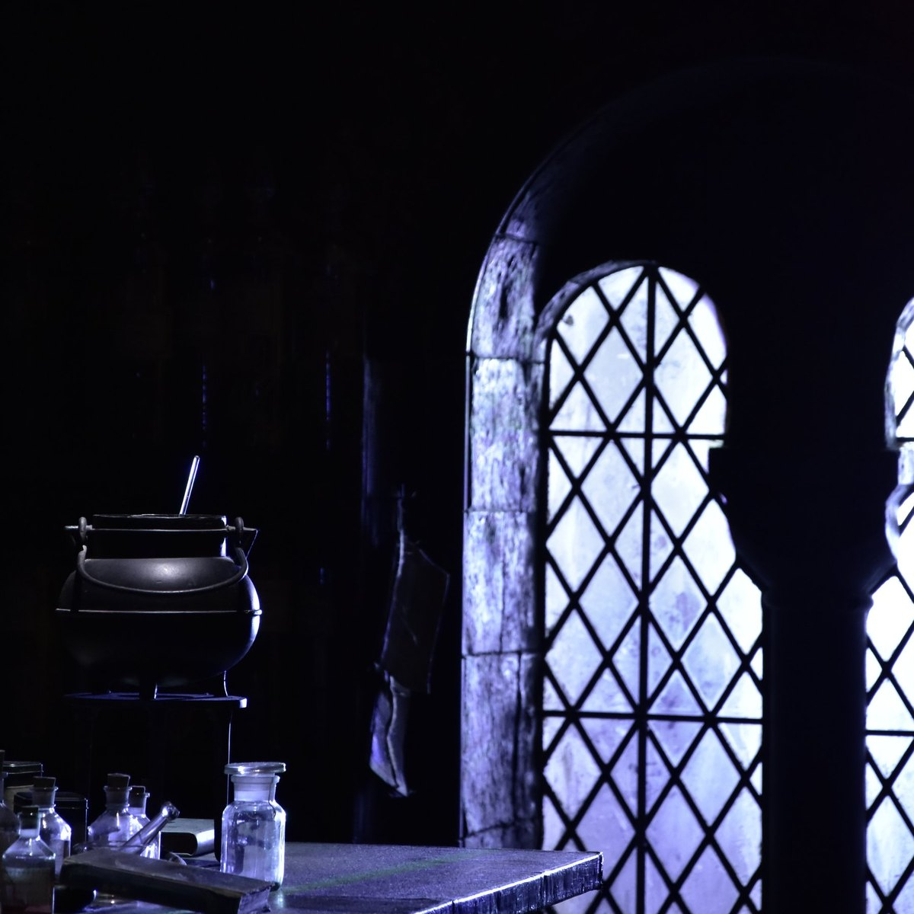
Harry Potter
Wasi nid gärn ha
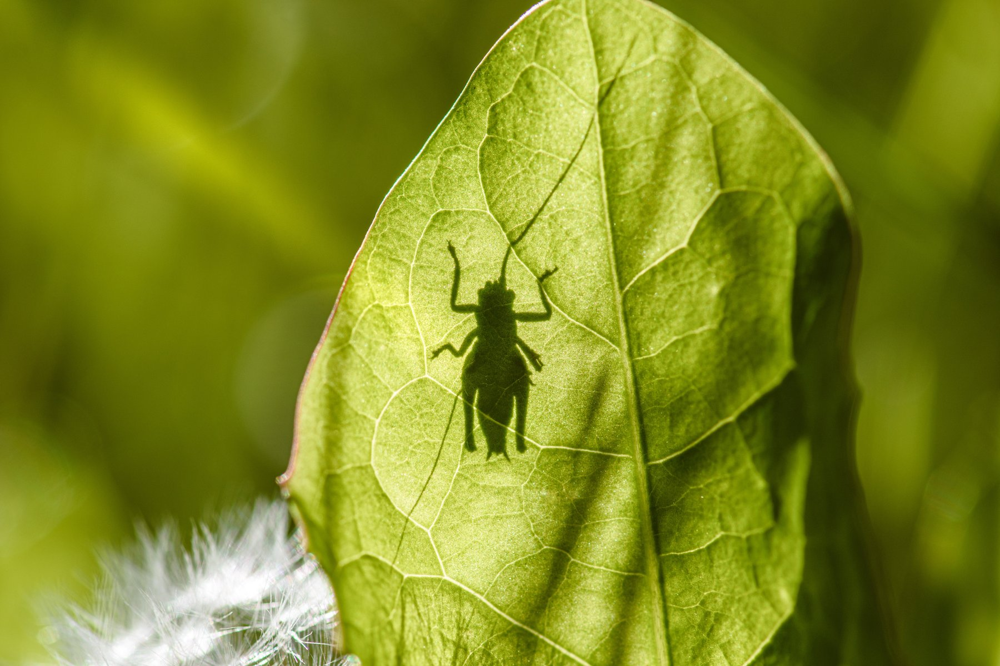
Höigümper
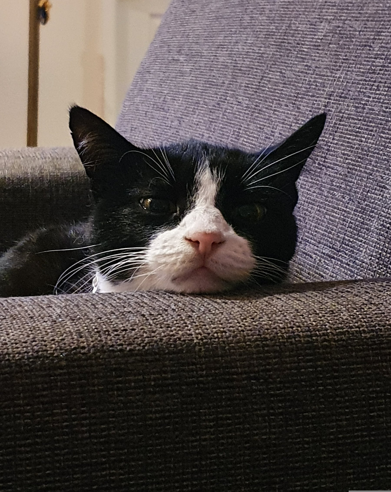
Längwile
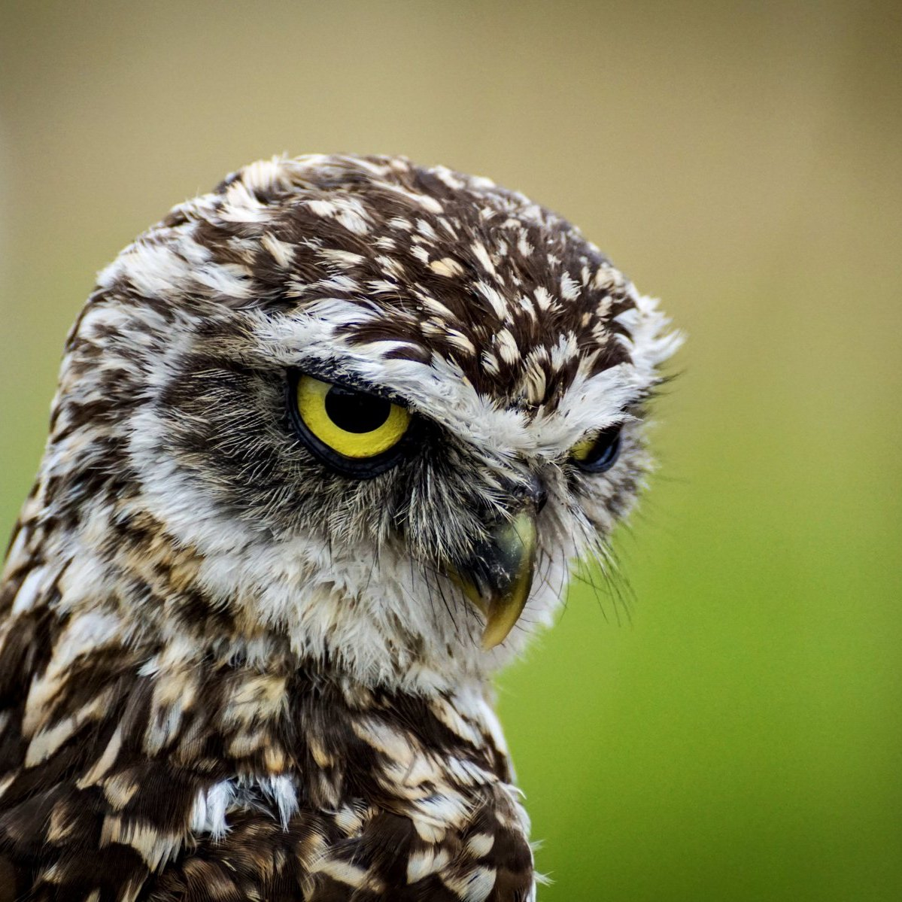
Früech gah schlafe